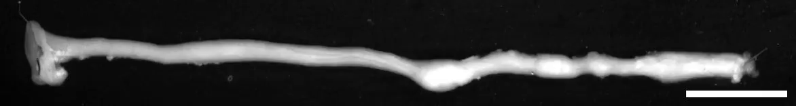
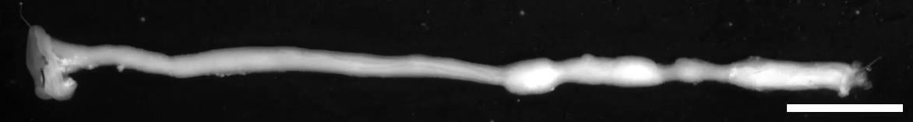
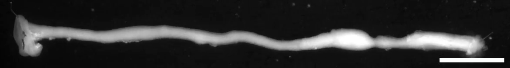

Changing colonic contours
A real isolated mouse colon changes its external contours during the source’s peristalsis recording. The thin, full-length field is preserved; it is not a diagram, a human meal-transit recording or a tracked bolus.
Publication file time; no experiment-time conversion.
Colon dissected, flushed with PBS and pinned in an organ bath with DMEM at 37 °C, oxygenated with 95% O₂/5% CO₂; 20 minutes of equilibration preceded recording. This preparation is different from intact gut function.
Keep timing distinct. The methods describe a 500 ms time-lapse delay and 45-minute, 5400-frame recordings for analysis. This publication file contains 1620 frames at 30 fps and lasts 54 seconds. Its export/frame-selection mapping is unverified, so the player does not convert file seconds into biological seconds or assign an acceleration factor.
Pendse et al. (2023), Macrophages regulate gastrointestinal motility through complement component 1q, eLife12:e78558, Figure6—video1, final version2 · CC BY4.0. Whole unchanged 1172 × 158 publisher-distributed MP4. No crop, interpolation, colour grading, retiming, new bar or added anatomical mark. Source, preparation and native timing · Reproduction/decode record.
Ordered still observations
- Initial frame: compare the varying diameter along the preparation.
- Middle file frame: the local contours differ, including the broad mid-to-right region.
- Final file frame: the distribution of narrow and wider regions differs again. These comparisons show qualitative contraction-associated shape change; they do not measure bolus propulsion or transit time.
Frame 0 · file PTS 0.000 s

Frame 810 · file PTS 27.000 s

Frame 1619 · file PTS 53.967 s
